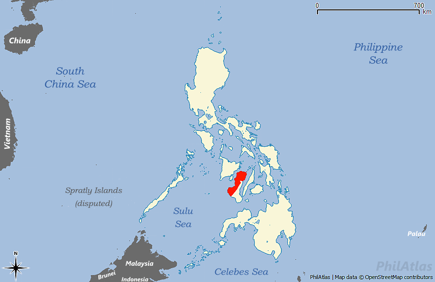
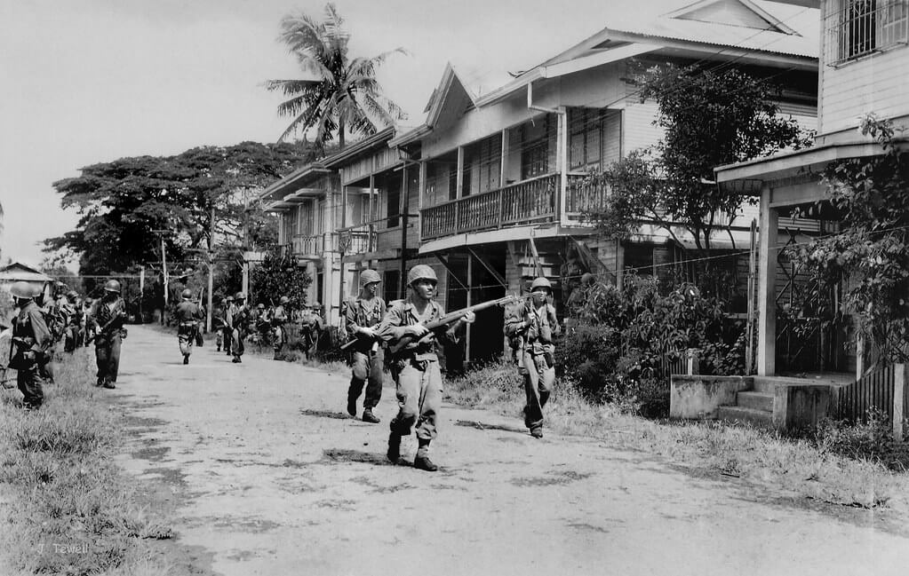
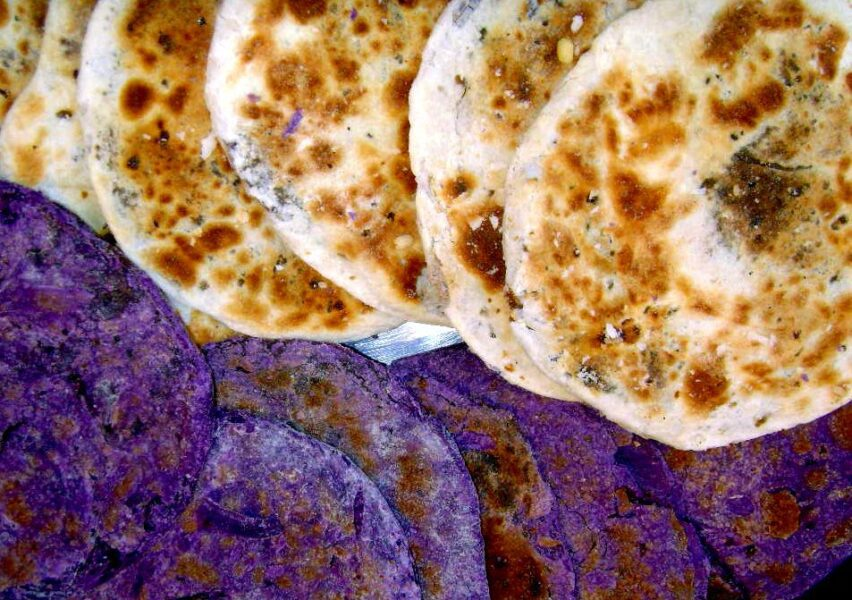
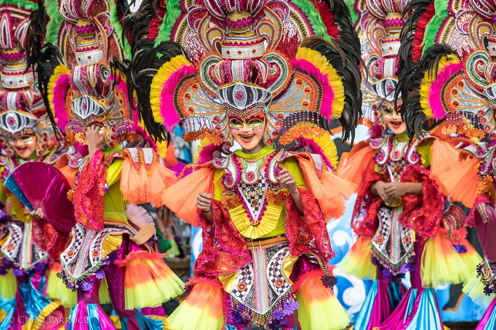
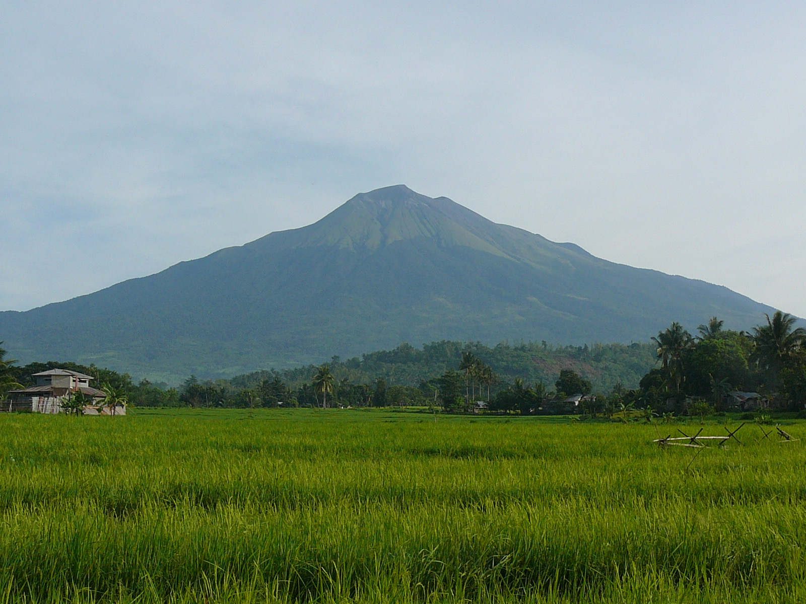

Negros Occidental is located in the Western Visayas region of the Philippines, occupying the northwestern portion of Negros Island — the fourth-largest island in the archipelago. It is bordered by the Visayan Sea to the north, the Guimaras Strait to the west, and Negros Oriental to the east.
The provincial capital is Bacolod City, also designated as a highly urbanized city and the economic, cultural, and political hub of the province. Bacolod is accessible by air from Manila and Cebu, and by ferry from Iloilo City and Cebu City.


Negros Island was named "Isla de los Negros" by Spanish explorer Miguel López de Legazpi in 1565, referring to the dark-skinned Ati people he encountered. The province's modern history is deeply intertwined with the sugar industry, which took root in the 19th century when sugarcane cultivation transformed the landscape and society of the island.
The sugar boom brought prosperity and shaped the distinct hacienda culture of Negros Occidental, giving rise to a wealthy planter class who built grand ancestral mansions — many of which still stand today in cities like Silay, Talisay, and Bacolod. The province became one of the most economically powerful in the Philippines during the American colonial period.
Today, Negros Occidental has evolved into a dynamic province that balances its rich agricultural heritage with growing industries in tourism, commerce, and services. It remains the top sugar-producing province in the Philippines, earning its enduring title: "The Sugar Capital of the Philippines."
The lyrical mother tongue of Negros Occidental, known for its warmth and poetic quality, spoken across the province.
The plantation culture produced a unique social structure and fine architecture visible in ancestral homes and estates.
From intricate MassKara mask-making to pottery and basket weaving, Negrense craftsmanship is deeply rooted in tradition.
Negrenses are known for their infectious smiles and genuine warmth — a hospitality that makes every visitor feel at home.
From volcanic mountains to white-sand islands, heritage cities to marine reserves — Negros Occidental packs extraordinary diversity into one province.
The MassKara Festival alone draws hundreds of thousands of visitors every October with its spectacular street dancing and smiling masks.
Direct flights to Bacolod from Manila and Cebu, plus excellent local infrastructure, make Negros Occidental easy to explore.
Negros Occidental boasts some of the Philippines' most distinctive food — from Kansi to Napoleones — flavors you won't find anywhere else.


